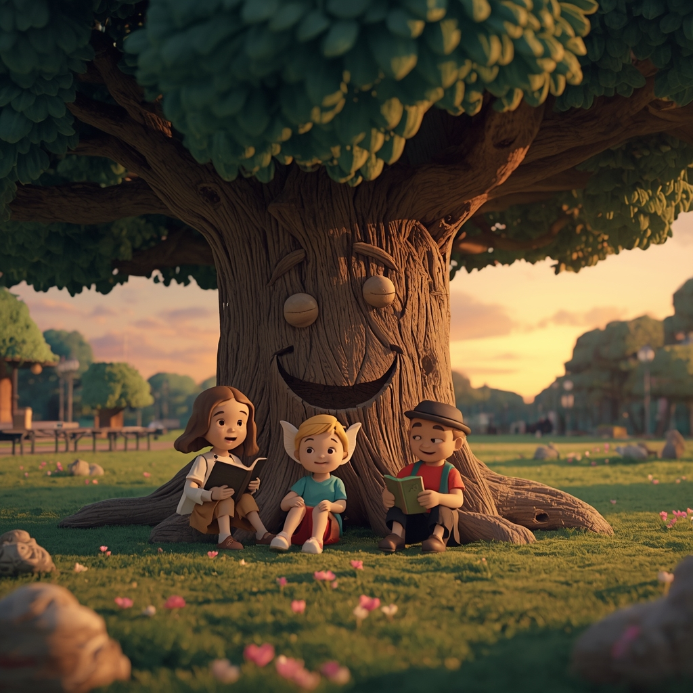

La importància de cuidar el medi ambient.
El dron que va lluitar per aconseguir els seus somnis
La importància de cuidar els oceans.
Una història sobre preseverança i amistat

Seleciona un conte per començar un viatge màgic

A KIDÒRIA els contes estàn disenyats per al futur: mesclen el respecte pel medi ambient i l'ús de la tecnologia.
Aquí, els arbres conen històries, els drons tenen sentiments i donam visibilitat a la programació.
Kidoria no és només una web de contes.
És un espai innovador i entretingut on el futur es converteix en una aventura.
✨ Perque el futur necessita a persones curioses, creatives i conscients.
TOTA GRAN IDEA COMENÇA D'UNA HISTÒRIA.